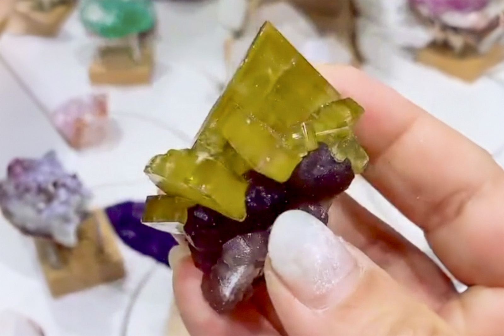

Barite on Botryoidal Fluorite
"Golden Barite on Purple Fluorite"
VI-09064
Xiefang Mine, Ruijin Co., Ganzhou, Jiangxi, China
Purchased 1/4/2026 from 7 Minerals Mine for $30.00
Core Collection • In Collection
Details
Storage Type: Flat
Storage Location: 000 Unassigned
Size class: Miniature (0)
Dimensions: 5.3 × 2.9 × 3.2 cm
Mass: 64.6 g
Luster: Above Average, Vitreous